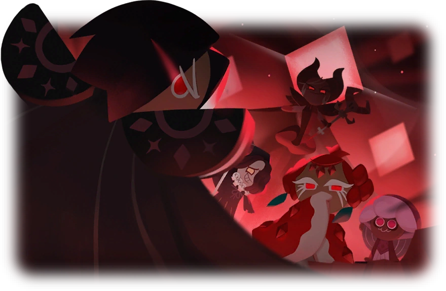

I spent too much time online

As someone who kinda grew up in the internet, I have my fair shair of fandom experiences. In this fandom section, I will share what I was fixiated with, and perhaps even write an whole essay on a certain topic. Hope you will get to know me and the media more!